ALSM/CTASLM Baseplate Assembly & Alignment
Assembly Overview
For the second iteration of our Altair baseplate system, the construction and alignment process is more involved than our first iteration, but should still be a straightforward step-by-step process.
Note on Available Configurations
The current iteration of the baseplate provides 5 different possible imaging configurations: 2 using a cylindrical lens to form the light sheet (ASLM, CT-ASLM), and 3 using a Powell lens to form the light sheet (SPIM, ASLM, CT-ASLM) . Our primary focus in this section will be the construction and alignment of the Powell lens configurations, but the cylindrical configurations will follow a similar process.
Breakdown of Baseplate Holes
Here we show a breakdown of all the holes on the baseplate in terms of what configuration they’re designed for (Figure 1), the elements corresponding to each hole (Figure 2), and the post height corresponding to those holes. It should be noted that we include a couple additional holes on the baseplate for alternative component mounting schemes (Figure 2).
Powell Lens Assembly
Step 1: Fixing the Powell lens into the AD9F Mount
For the first step, get a piece of optical tissue paper and the AD9F and Powell lens. Place the flat face of the Powell lens onto the tissue paper, and then place the AD9F onto the Powell lens such that the front surface of the smaller side of the AD9F is flush with the flat face of the Powell lens. Use the two mounting screws on the AD9F to secure the lens in place.
Step 2: Install the LRM1 rotation Mount into the Polaris 1XY
Step 3: Install the LNR25M onto the Baseplate
Step 4: Fix the 1” Polaris Post onto the LNR25M to Polaris adapter
Step 5: Install the LNR25M to Polaris adapter onto the LNR25M
Step 6: Fix the Polaris 1XY onto the 1” Polaris post
Step 7: Screw in the AD9F into the LRM1 mount until it’s fully threaded
Voicecoil Assembly
Step 1: Fixing the mirror into the voicecoil
Start by taking a 0.5” mirror and fixing it into the central hole on our voicecoil using UV-cured resin adhesive . Apply a thin layer of liquid resin to the back of the mirror, and place the mirror in the central voicecoil hole. Then using a UV flashlight, cure the resin to secure the mirror in place.
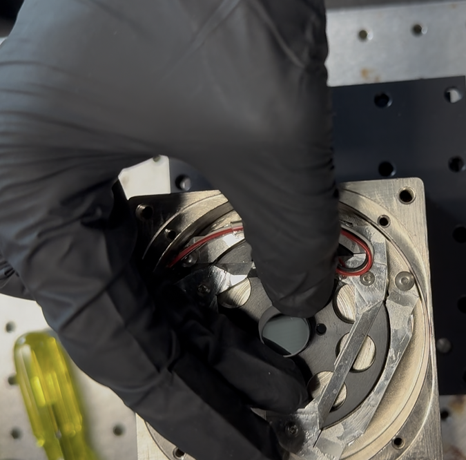
Figure 1: Placing the mirror into the voicecoil hole
Step 2: Secure the PY004 onto the baseplate
Depending on if you’re planning on the cylindrical or the powell lens illumination paths, there will be a different set of threaded holes to fix the PY004 onto the baseplate with, highlighted in the image below. The large 3-hole pattern on the top of the PY004 should align directly with the three threaded holes on the baseplate. Screw 1/4” screws into these holes to secure the PY004 in place.
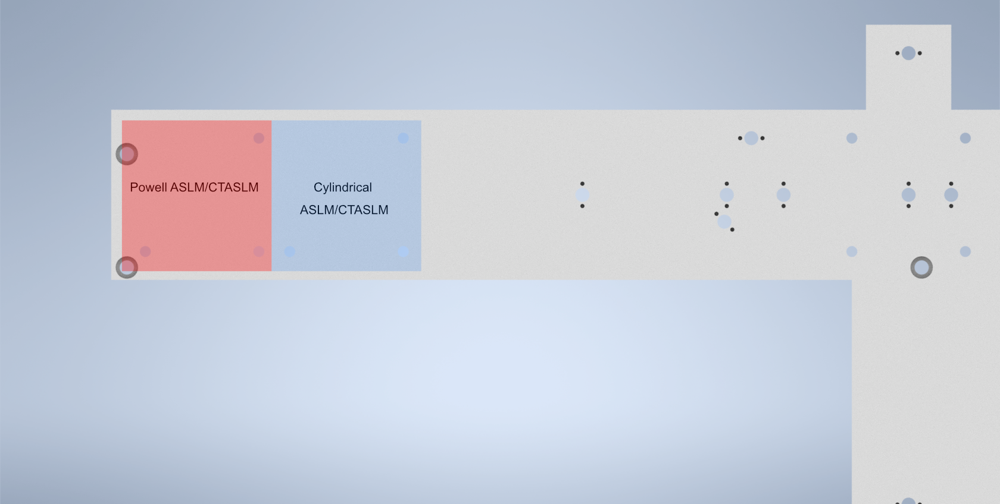
Figure 2: Location of the holes used to secure the PY004 onto the baseplate depending on if you’re doing an powell or cylindrical lens system
Step 3: Secure the voicecoil to PY004 adapter onto the PY004
Using 1/4” screws in the 4 holes on the adapter, tighten the screws until the adapter is secured in place onto the PY004.
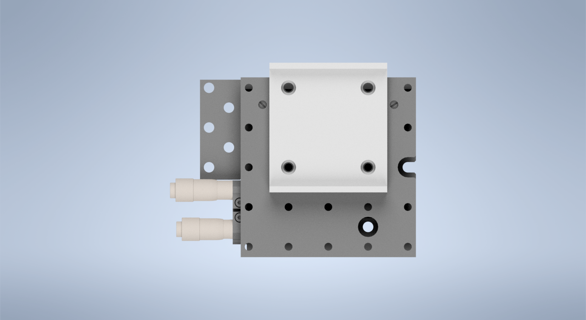
Figure 3: Placement of the voicecoil adapter on the PY004
Step 4: Secure the voicecoil to the adapter using the front screw holes
Using 8/32” screws, secure the voicecoil onto the front of the adapter using the two thru-holes on the front of the adapter.
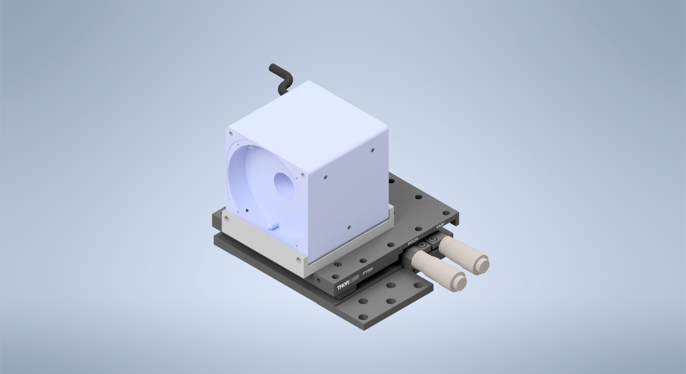
Figure 4: Completed voicecoil assembly
Alignment Overview
For the second iteration of our Altair baseplate system, the construction and alignment process is more involved than our first iteration, but should still be a straightforward step-by-step process.
Step 1: Laser Collimation
When first assembling the system, ensuring proper output collimation from the fiber laser source is critical. There are multiple checks that one can take for this step, but we utilize a combination of a shear-plate interferometer and two pinhole apertures placed at opposite ends along the length of the baseplate. Shear-plate interferometers are designed to split and interfere an input beam of coherent light, such that when the beam is collimated there are interference fringes aligned vertically with a reference line. The fiber laser collimator we used for this system is the Thorlabs CFC11A-A, which features an adjustable barrel which controls the position of collimation optics within the element.
The basic assembly process involves first inserting and fixing the CFC11A-A into a Thorlabs AD15S2 adapter, which allows it to then be mounted into a 2.5” Polaris K1XY mount. This assembly is then mounted onto the respective Polaris post at the start of the baseplate. The fiber laser source is then able to be directly mounted into the CFC11A-A, making sure that the protrusion on the fiber wire aligns with the open section of the CFC11A-A port. The basic process of ensuring collimation then involves turning on the laser source, and placing the shear-plate interferometer such that the input port aligns with the output of the laser unit. Then, by slowly adjusting the barrel of the CFC11A-A and observing the interference fringe orientations along the top display of the interferometer, one is able to adjust the beam until it is properly collimated.

Figure 1: Shear Plate interferometer and collimator lens
Step 2: Beam Walking 1
Section Goal: Ensure that the beam is traveling parallel to the baseplate surface and through the center of all mounted elements up to the RFO location (part 1).
With the beam properly collimated, we can begin the series of steps to walk the beam such that it is both centered on all of our optical elements as well as runs parallel to the surface of the baseplate. Then place one 2.5” Polaris post at these three locations: the hole corresponding to the Powell lens, the hole corresponding to L4, and the hole corresponding to the remote focus objective (RFO) location. Then place 1XY mounts on each of those 2.5” Polaris Posts . Then screw SM1-threaded adjustable irises (SM1D12) into those 1XY Mounts. Then place a 1” mirror in a Polaris B1F mount and mount it on a 3” optical post in the 45 degree oriented mounting position on the board as shown in the image below. With the irises and mirror in place, this step becomes and iterative process of adjusting the XY and Tip/Tilt of the laser K1XY mount until the beam passes through the center of all irises and roughly onto the center of the mirror. As a general direction, starting with the irises opened more and then steadily closing them further as you refine the tip/tilt and XY of the K1XY is recommended. If adjusting the tip/tilt of the K1XY becomes a bit overwhelming, it might be helpful to screw all of the tip/tilt knobs on the mount fully in, such that the starting point that you’re working from should be roughly flat (perpendicular to the surface of the baseplate).
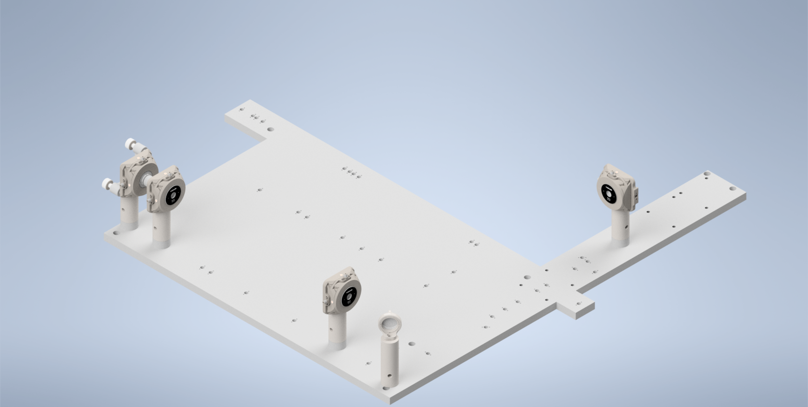
Figure 2: Beam Walking 1
Step 3: Beam Walking 2
Section Goal: Ensure that the beam is centered on the galvo and K1S4 mirror, and that it travels parallel to the baseplate surface and through the center of all mounted elements up to the RFO location (part 2).
Next, assemble and add in the resonant galvo and the K1S4 mirror directly underneath it. Then replace the post of the 45 degree B1F mirror to be 2” instead of 3”. Then place two 1XY mounts on 1.5” posts, one at the location of the RFO and one at the location of L5. Then place and screw in the PY004 onto the baseplate and then mount the voicecoil adapter on top as shown below (have graphic that shows the location of the voicecoil mount on the PY004). Then mount the voicecoil (Link assembling voicecoil section) onto the adapter, making sure the side with the mirror is facing towards the beam path. The iteration flow here will be to adjust the tilt of the resonant galvo until the beam is centered on the K1S4 mirror underneath it, and then adjust the tip/tilt of the K1S4 mirror until the beam is centered on the B1F mirror and the two irises after. Then adjust the tip/tilt on the PY004 of the voicecoil until the back-reflected beam spot passes through the irises on it’s return path.
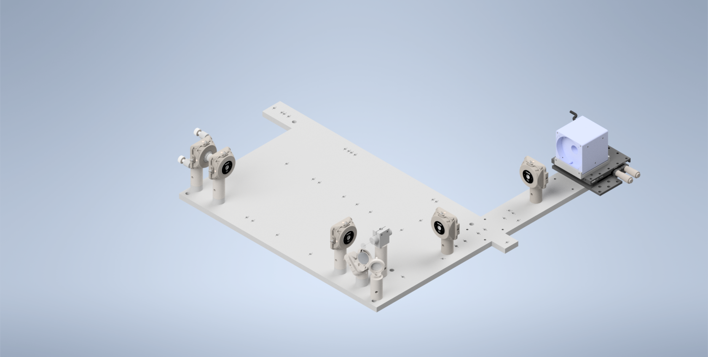
Figure 3: Beam Walking 2
Step 4: Beam Walking 3
Section Goal: Place the beamsplitter in the system, ensure it’s oriented correctly.
Assemble the beamsplitter, it’s mount, and the 1.75” Polaris post it rests on, and mount it on it’s corresponding hole (show the orientation of the beamsplitter). Ensure that the beamsplitter is oriented such that the beam is passing through both sides (you can use pinholes to irises for this step, they should screw into the SM1 threading on the beamsplitter).
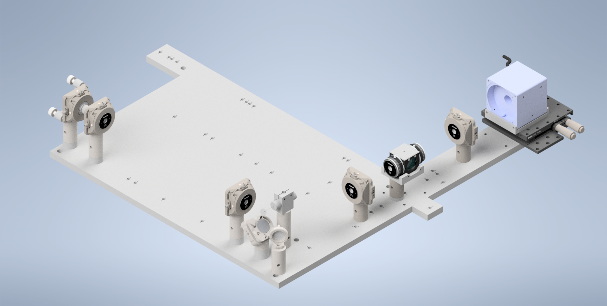
Figure 4: Beam Walking 3
Step 5: Optional Beamsplitter Alignment
Section Goal: Use the alternative laser launch hole (have graphic) to ensure that test beam goes straight through the beamsplitter return path to the center of the ILO.
Mount three Polaris 1XY units on 1.5” posts along the return path at the location of L6, L7, and the illumination objective (ILO), respectively. Then mount a 1.5” post and Polaris 1XY unit on the hole denoted for the alternative laser launch. Screw the laser (Thorlabs CPS532) into the Polaris 1XY mount. With each of the 1XY Mounts roughly centered in both X and Y, ensure that the laser beam passes through the center of all elements using a frosted pinhole or iris installed in them.
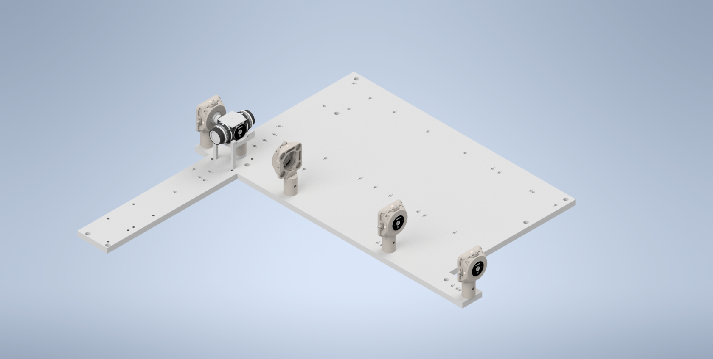
Figure 5: Beamsplitter Alignment
Step 6: Beam Walking 4
Section Goal: Install polarizers and ensure that the beam is traveling properly on its return path through the beamsplitter.
rotate the 1/2 waveplate to make the beam as bright as possible in the direction of the RFO, then adjust 1/4 wave plate to make the beam as bright as possible on the return path in the direction of the ILO (have graphic)
Ensure that the return beam properly travels back through the beamsplitter and down the path to the ILO. Adjust tip/tilt of voicecoil mirror to manipulate the direction of the beam.
Establishes a ground-truth beam position for the next step where we add in the RFO.
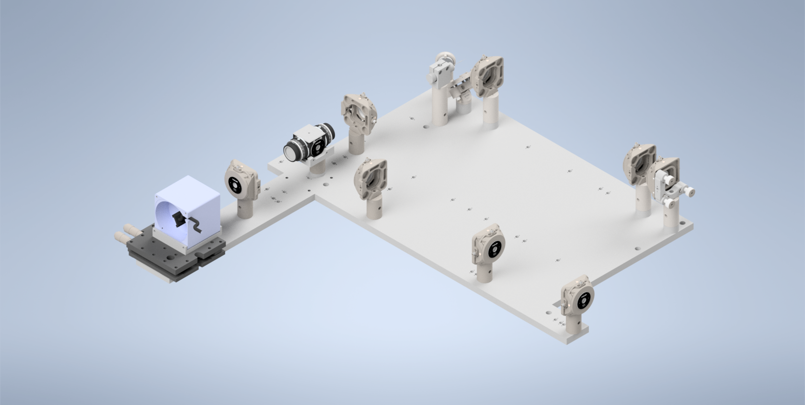
Figure 6: Beam Walking 4
Step 7: Beam Walking 5
Section Goal: Add in RFO, do initial alignment.
Added RFO back in, then adjusted the XY on the mount for the RFO until the back reflections from the RFO were aligned (same method, put a pinhole card behind RFO and center the pinhole on the beam)
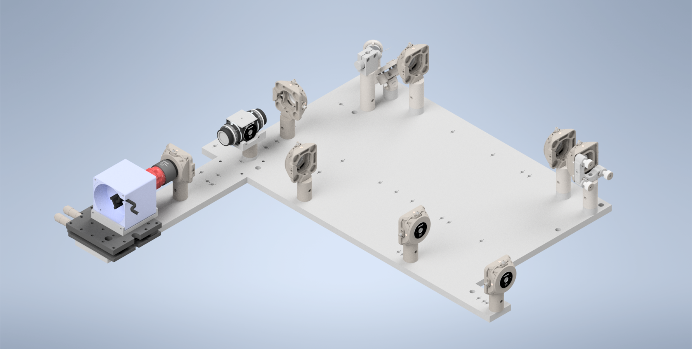
Figure 7: Beam Walking 5
Step 8: RFO Offset
Section Goal: Adjust the RFO offset in navigate such that it’s collimated between the beamsplitter and L6 and L7 and the ILO.
Now adjust the RFO offset in navigate (leaving the amplitude at 0 for now), until the light between the beamsplitter and L6 and L7 and the ILO is collimated. The available range should be between 1 to 10, with the optimal value varying for each system, for our initial system this value was around 5.
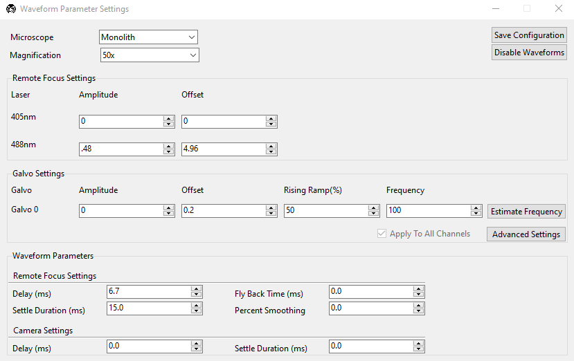
Figure 8: The Waveform Parameters panel in navigate.
Step 9: Add In Lenses
Section Goal: Add in the rest of the non-Powell lenses into the illumination path.
Install L1, L2, L3, and L4 into their respective B1S holders, and then screw those holders into their correct
If beam is no longer centered on the RFO, Remove the RFO from the path, and focused on adjusting the tip/tilt of the voicecoil mirror to have the return beam be centered on both the first TL mount after the beamsplitter on the return path as well as the ILO objective mount (using irises or frosted pinholes)
Added RFO back in, then adjusted the XY on the mount for the RFO until the back reflections from the RFO were aligned (same method, put a pinhole card behind RFO and center the pinhole on the beam)
Then add in TL1 and TL#2, adjust the rotation and XY of TL2 to make the beam on the ILO centered again, use shear plate and change VC offset to get beam re-collimated Using the re-collimated offset position as the baseline, adjusted the detection path (ensuring it’s as perpendicular as can be to the illumination path), and primarily adjusted TL1 and TL2 XY’s to center the beam as much as possible on the back of the ILO
Step 10: Install Detection Path
Section Goal: Assemble/incorporate detection path into the setup, ensure it’s centered on the beam by using the chamber filled with water and fluorescein.
Added RFO back in, then adjusted the XY on the mount for the RFO until the back reflections from the RFO were aligned (same method, put a pinhole card behind RFO and center the pinhole on the beam)
Various Troubleshooting
Section Goal: Mitigate any issues in the system.
Optimizing Lens Placement/Orientation Using Backreflections
Optimizing Powell Lens Placement